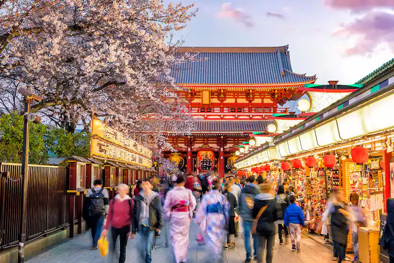

Tokyo is a city of surprises — ancient temples are nestled among modern skyscrapers and you're just as likely to see someone wearing a cosplay costume as you are to see someone dressed in a traditional kimono. And even though Tokyo is the most populated city in the world, the streets can be almost eerily silent. You'll find every modern convenience (and then some), but because Japan was closed off to the rest of the world for many years, tech evolved in a way that reflects the Japanese psyche, English is not widely spoken, and the far-reaching effect of globalization is still minimal. It is a true breath of fresh air among the myriad destinations that lost themselves in their quest to cater to tourists and meet global ideals.
These contradictions and surprises make Tokyo a city that leaves you curious, fascinated, and wanting more. In a single day you can visit a 7th-century temple, order ramen from a vending machine, and watch a sumo match. There is no shortage of things to do, see, and eat in Tokyo, and while its citizens tend to be respectful and accommodating, they too, like to keep you on your toes. Swing by a maid cafe or a Babymetal concert and you'll know what I mean.
The best time to visit Tokyo is in the spring, when the cherry blossoms bloom (typically March to April) and in the autumn, when the weather cools and the fall colors pop (between September and November). That being said, the weather in Tokyo is fairly temperate — even in the winter — although it can be hot and humid from late June to the end of August.
